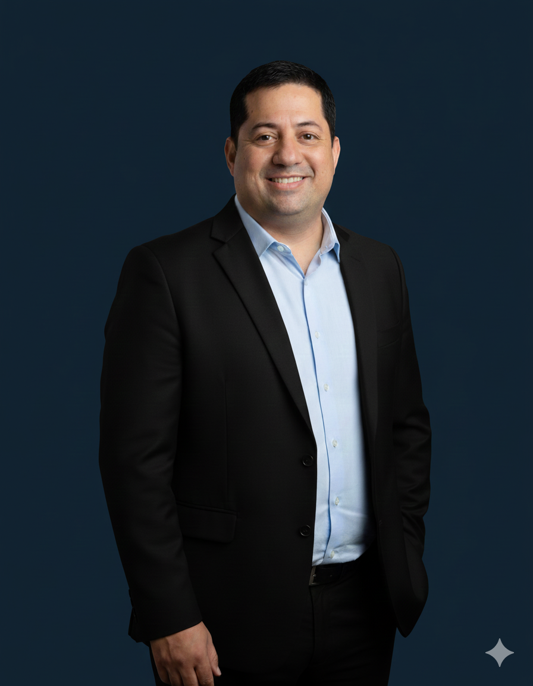
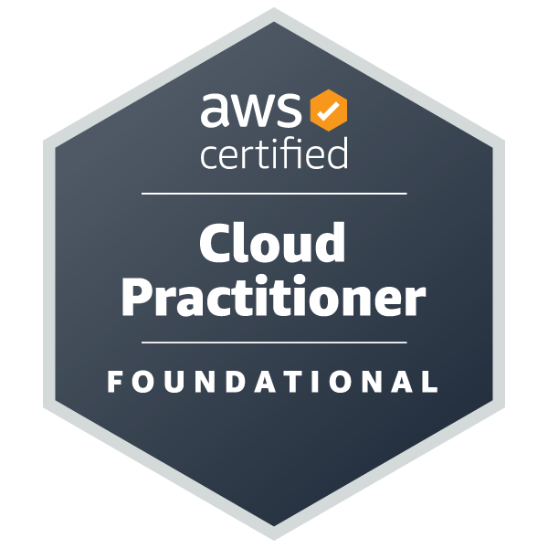
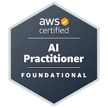
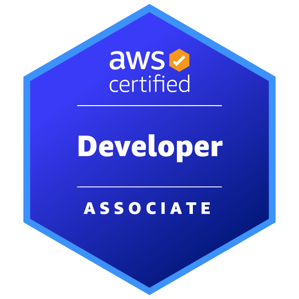
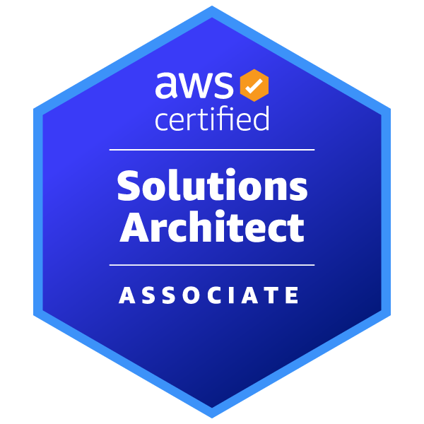

Profissional certificado AWS (4x), com foco em Cloud Computing, Infraestrutura como Código (Terraform) e automação com Inteligência Artificial Generativa. Aplico esses conhecimentos em projetos práticos de automação e arquiteturas modernas baseadas em eventos, além de redes seguras provisionadas como código, sempre com boas práticas de segurança e deploy automatizado.
Com mais de 15 anos liderando equipes e operações — da coordenação de obras à direção geral de uma empresa — hoje aplico essa mesma capacidade de planejamento e execução na construção de infraestrutura em nuvem.


AWS Cloud Practitioner
AWS AI Practitioner
AWS Developer Associate
AWS Solutions ArchitectEste site (o que você está vendo agora) roda sobre Amazon S3 com Static Website Hosting, provisionado via Terraform. Base de IAM e controle de acesso que depois reutilizei em projetos com IA generativa.
Ver repositórioArquitetura orientada a eventos: upload de imagem no S3 aciona uma Lambda que usa Amazon Rekognition, salva resultados no DynamoDB e envia alertas via SNS.
Ver repositórioPipeline serverless que converte PDFs em audiolivros, alternando entre Amazon Polly e ElevenLabs. Infraestrutura 100% em Terraform, com fila SQS + DLQ e FinOps.
Ver repositórioProjeto em equipe com agente Strands em Lambda: extrai texto com Textract, classifica e resume com Bedrock. Meu papel: arquitetura e infraestrutura AWS completa.
Ver repositórioEstou aberto a oportunidades como Cloud/DevOps Engineer Jr. Fale comigo.